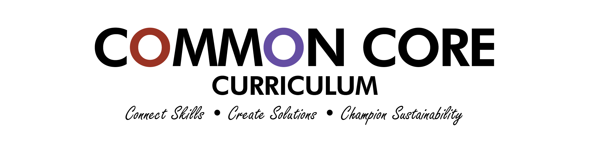
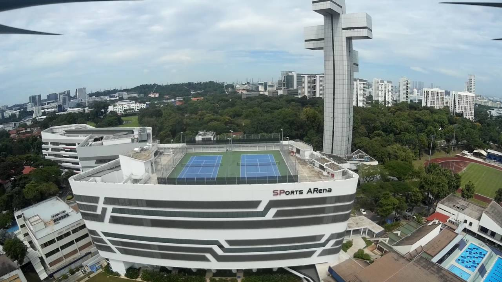

Singapore
Polytechnic
At the forefront of the green economy — a living laboratory for sustainability, where we prototype solutions aligned with the SG Green Plan.

Common Core
Curriculum
Learning experiences framed with the SG Green Plan and UNSDG's. We learn to prototype sustainable solutions for real-life issues. The curriculum prepares us to lead in the green economy.
Campus
Ecosystem
SP is home to 230 different plant species. This biodiversity contributes to a healthy ecosystem on campus, providing cleaner air and a vibrant natural environment for students to thrive in daily.

Platinum
Buildings
Our commitment is etched in our foundations. Buildings like the SP Sports Arena have been certified Green Mark Platinum — the gold standard in sustainable architecture and responsible building design.